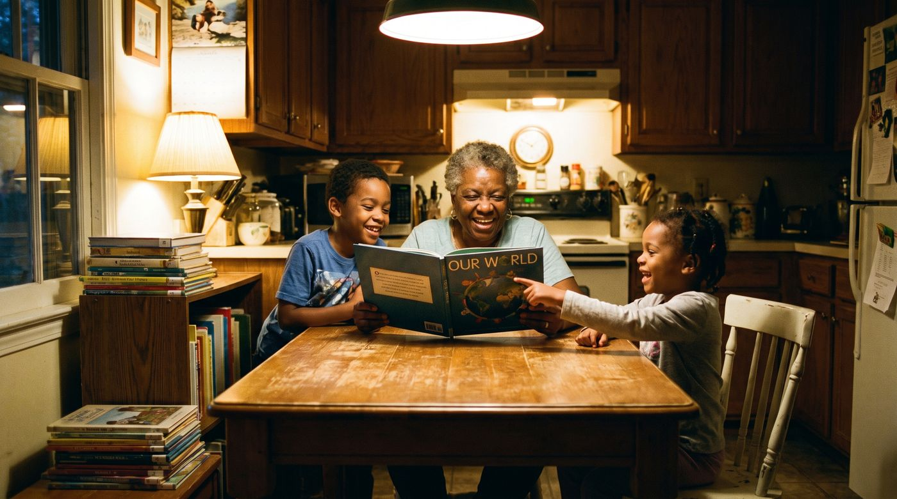
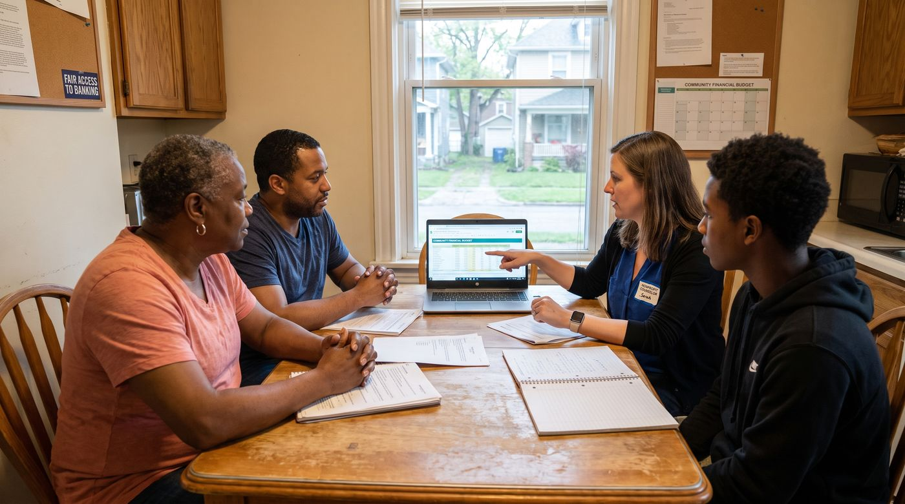

Blog
Read, think, lead
Technology, careers, workforce policy, and civic life, for fellows and the families behind them.
 Tech & Business ·
Tech & Business Brief: Tech Around the WorldWhere everyday apps really come from, the record Anthropic IPO, Nvidia's quarter, and the visa rules underneath the AI boom.
Leadership & Civics ·
Inspiration Edition: The American Dream Is Still a ThingPaths from modest beginnings to public service, a Nobel Peace Prize story, and neighbors who showed up at the polls.
Policy & Civics ·
Whose Voices Shaped This Election?Historic firsts, what they mean for language access and English learners, and what comes next for immigrant and multilingual families.
Tech & Business ·
Tech & Business Brief: Tech Around the WorldWhere everyday apps really come from, the record Anthropic IPO, Nvidia's quarter, and the visa rules underneath the AI boom.
Leadership & Civics ·
Inspiration Edition: The American Dream Is Still a ThingPaths from modest beginnings to public service, a Nobel Peace Prize story, and neighbors who showed up at the polls.
Policy & Civics ·
Whose Voices Shaped This Election?Historic firsts, what they mean for language access and English learners, and what comes next for immigrant and multilingual families.

Workforce · Reading Is the First Job Skill: Why Literacy Is Workforce DevelopmentEvery career pathway starts with reading. Here's how families can build it at home, at any age.
Policy & Finance · Taxing the Unbanked: Why Ohio Should Protect Check-Cashing and Payday BorrowersA proposed revenue idea, more than a decade of Ohio reform, and the protections every borrower can use today.